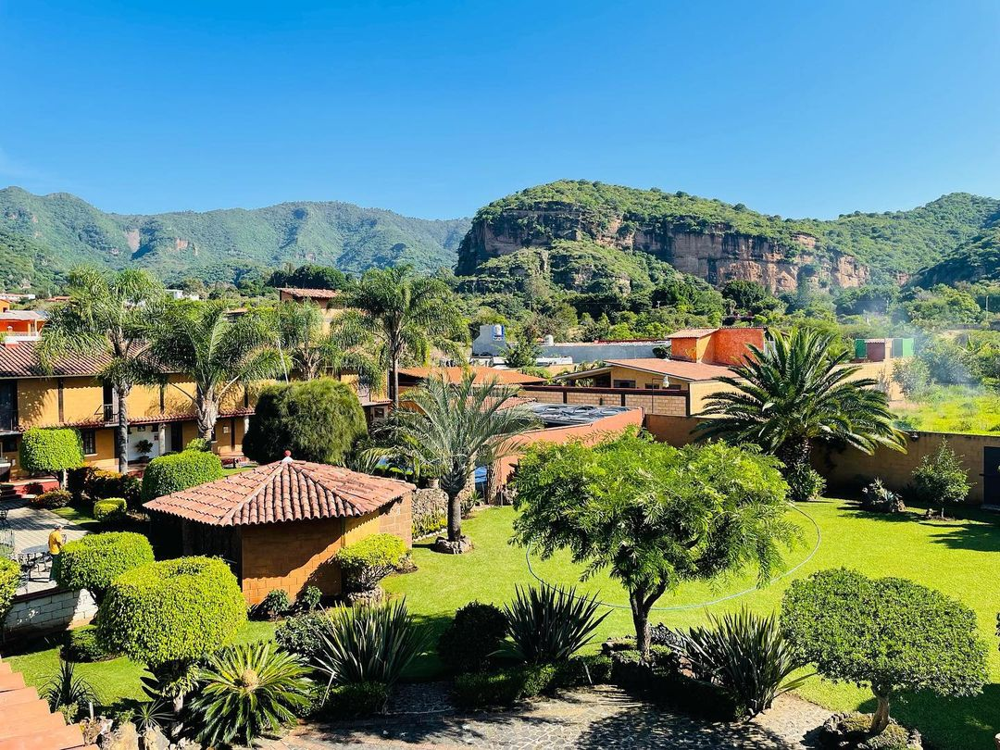

48 horas en Malinalco: el itinerario perfecto para un finde
✍️ Emmanuel Orihuela · Cantera & Calma📅 Junio 2025⏱️ 9 min de lectura🗓️ Finde

Malinalco condensa en dos días lo que otros destinos ofrecen en semanas: arqueología, mezcal, gastronomía de autor y naturaleza, sin que tengas que elegir.
Por qué Malinalco funciona perfecto en un fin de semana
Hay destinos que necesitan una semana para entenderse. Malinalco no es uno de ellos — y eso es precisamente su magia. Es un Pueblo Mágico compacto donde puedes ir de la zona arqueológica a una destilería de mezcal artesanal, y de ahí a cenar comida de autor, todo en el mismo día, todo caminando o en un tuk-tuk de cinco pesos.
Llevo más de 8 años recibiendo huéspedes en el Barrio de San Juan y la pregunta más frecuente sigue siendo la misma: "¿Cómo organizamos los dos días?" Este artículo es la respuesta que le doy a cada uno de ellos.
"Malinalco es el único lugar donde en 48 horas puedes sentirte local, arqueólogo, sommelier de mezcal y gourmet — todo sin subirte a un auto."
El itinerario asume llegada el viernes por la noche o el sábado temprano. Está calibrado para quien quiere aprovechar sin agotarse, con espacio para sentarse a ver pasar el pueblo entre actividad y actividad.
📍 Base de operaciones
Las propiedades de Cantera & Calma están en el Barrio de San Juan, a menos de 10 minutos caminando de todos los puntos de este itinerario. Sin auto, sin apps de transporte, sin estrés.
Sábado: llegada, asombro y primer mezcal
El primer día es para orientarse y caer en cuenta de que Malinalco es mejor de lo que esperabas. Empieza despacio y deja que el pueblo te atrape solo.
Día 1 · Sábado
Llegada · Arqueología · Mezcal
☕
8:30 am · Desayuno
Casa Valentina — el desayuno que pone el tono
El primer desayuno en Malinalco tiene que ser aquí. Casa Valentina es ese café donde el tiempo se ralentiza: baguettes frescas, café de especialidad y un ambiente tranquilo que te dice "ya llegaste". No hay prisa, no hay menú complicado — solo la promesa de que el día va a estar bien.
☕ Café de especialidad🥖 Baguettes💚 Favorito de los locales
💡 Tip de local: Llega antes de las 9am los sábados. Después de las 10 puede haber espera.
🏛️
10:00 am · Cultura
Zona Arqueológica — el momento que todos recuerdan
Un templo tallado directamente en la roca viva de la montaña, único en su tipo en toda Mesoamérica. El recorrido toma entre 45 y 60 minutos incluyendo la subida. Las vistas al valle desde arriba justifican el esfuerzo por sí solas. Es la parada que convierte a Malinalco en un destino que se repite.
🏛️ Patrimonio🎟️ ~$80 entrada💚 ¡Gratis los domingos!
💡 Tip de local: Abre a las 10am. La luz de la mañana en el templo es cinematográfica — trae la cámara.
🎨
12:00 pm · Cultura
Museo Schneider — el Malinalco que no ves en Instagram
A pocas cuadras de la zona arqueológica, el Museo Universitario Dr. Luis Mario Schneider guarda una colección que contextualiza todo lo que acabas de ver. El guía que inicia cerca del mediodía es uno de esos narradores que hacen que la historia cobre vida. Precio simbólico: $15 por persona.
La primera comida grande del viaje merece un lugar especial. Los Placeres fusiona ingredientes típicos de la región — quelites, hongos silvestres, flores comestibles — con técnica contemporánea. El resultado es una experiencia que te recuerda dónde estás sin que se sienta forzado. Ambiente íntimo y servicio atento.
Mezcal La Cascada — el mezcal que sabe a Malinalco
Una destilería artesanal donde puedes ver el proceso completo: desde el maguey hasta el destilado en olla de barro. La visita cambia para siempre cómo ves un vaso de mezcal. Una de las experiencias más auténticas del Estado de México.
🥃 Destilería artesanal🌵 Proceso completo💚 Experiencia única
💡 Tip de local: Llama antes para confirmar horario de visita guiada. Pregunta por el mezcal de temporada.
🛍️
6:30 pm · Paseo
Mercado Artesanal — comprar directo con el artesano
Uno de los pocos mercados donde todavía compras artesanía directamente de quien la hizo. Textiles, cerámicas, productos de palma y los rebozos típicos de la región. Los precios son justos y la historia detrás de cada pieza vale más que el objeto mismo.
El primer día cierra en Caudillos: el restaurante favorito del Barrio de San Juan. Por su sabor, sus bebidas y una carta que siempre tiene algo que te sorprende. El ambiente de noche tiene una energía diferente — más tranquilo, más íntimo. El lugar perfecto para cerrar el día con una copa en la mano y el pueblo afuera.
Domingo: naturaleza, espiritualidad y el cierre perfecto
El segundo día tiene un ritmo diferente. Más naturaleza, más silencio — y una cena que justifica el viaje por sí sola. Los domingos en Malinalco tienen una calidad de luz y un silencio matutino que no se encuentran igual en ningún otro lugar.
Día 2 · Domingo
Naturaleza · Chalma · Cierre gastronómico
🐟
9:00 am · Naturaleza + desayuno
Criadero de Truchas — la actividad más subestimada
A 2.4 km del centro, el Criadero de Truchas es una de esas experiencias que los turistas descubren por accidente y luego recomiendan a todos. Pescas tu propia trucha y te la preparan al mojo de ajo o empapelada, mientras nadas en sus albercas naturales. Perfecto para ir en familia o en pareja, y funciona como desayuno contundente.
💡 Tip de local: Llega con hambre — la trucha recién preparada vale el viaje por sí sola.
🦋
11:00 am · Opcional
Museo Vivo Los Bichos — para los curiosos
Una colección de reptiles, insectos y arácnidos vivos que desafía todos tus prejuicios sobre estos animales. Una de las experiencias más originales del Estado de México, a 2.4 km del departamento. Ideal para mañanas tranquilas de domingo.
Santuario del Sr. de Chalma — 15 min que cambian la perspectiva
Uno de los santuarios más importantes de México está a solo 15 minutos en auto. Si vas un domingo en horas de la mañana, la experiencia tiene una calma y una belleza particulares. No hace falta ser creyente para sentir el peso histórico del lugar.
⛪ Patrimonio espiritual🚗 15 min en auto💚 Ir temprano
💡 Tip de local: Puedes tomar un taxi desde el centro y negociar ida y vuelta directo con el taxista.
💆
3:00 pm · Bienestar
Centro Holístico Ollinyotl — el premio del viaje
Si el cuerpo lo pide después de dos días de caminatas, Ollinyotl ofrece masajes, spa y un invernadero que hacen del descanso una experiencia en sí misma. Una de las mejores propuestas de bienestar en el Estado de México. Perfecto para la tarde del segundo día, antes de la cena de cierre.
El último menú del viaje tiene que ser aquí. Maíz Criollo es el restaurante más especial de Malinalco: un menú de autor en 3 tiempos con ingredientes locales y técnica de alta cocina que cambia cada temporada. Es el tipo de experiencia que hace que la gente regrese a Malinalco. Si hay una sola cena que vale la pena reservar con anticipación, es esta.
🌽 Comida de autor🍽️ 3 tiempos💚 Reservar con anticipación
Templado casi todo el año. Lleva una ligera en la noche. Jun-Oct puede llover.
💵
Efectivo
Trae suficiente
No todos los negocios pequeños aceptan tarjeta. Hay cajero en el centro.
👟
Calzado
Zapato cómodo
La zona arqueológica tiene escalones. El centro se camina bien con tenis.
🗓️ ¿Cuándo ir?
Los mejores fines de semana son octubre–noviembre y febrero–mayo: clima perfecto, sin lluvias frecuentes y menos saturación turística que el verano. Evita los puentes muy largos si quieres el pueblo tranquilo.
Preguntas frecuentes sobre el itinerario
Un fin de semana para dos incluyendo alojamiento en Cantera & Calma, comidas en los restaurantes de este itinerario, entradas a atracciones y algún transporte puede rondar entre $3,000 y $5,500 MXN. Reservando directo con nosotros ahorras hasta 20% vs Airbnb, lo que ya te da margen para cenar en Maíz Criollo sin culpa.
No. Todos los puntos del Día 1 y la mayoría del Día 2 son accesibles caminando desde el centro. El único punto que requiere transporte es el Santuario de Chalma (15 min en taxi) y el Criadero de Truchas si prefieres no caminar los 2.4 km. Los tuk-tuks locales cubren perfectamente cualquier distancia corta.
Es una de las zonas arqueológicas más singulares de México: un templo tallado directamente en la roca viva de la montaña, único en su tipo. La subida toma unos 15 minutos y las vistas al valle desde arriba justifican el esfuerzo. Visita obligada — y los domingos es completamente gratis.
Para Maíz Criollo y Los Placeres en fin de semana, definitivamente sí — especialmente para más de 3 personas. Caudillos y Casa Valentina generalmente tienen lugar sin reservación. El Criadero de Truchas puede llamarse el día anterior para confirmar disponibilidad de albercas.
Malinalco funciona muy bien para familias. El Museo Vivo Los Bichos y el Criadero de Truchas son los puntos más populares con niños. La zona arqueológica tiene escaleras pero es accesible. Restaurantes como Pancho Villa y Casa Diablitos tienen opciones amigables para toda la familia.
Tu base ideal para estas 48 horas 🏡
Cantera & Calma está en el Barrio de San Juan — a pasos de todo lo que describes en este itinerario. 4 propiedades · SuperAnfitrión 8 años consecutivos · +450 reseñas ★★★★★ Reserva directo y ahorra hasta 20% vs Airbnb. Incluye guía local impresa.